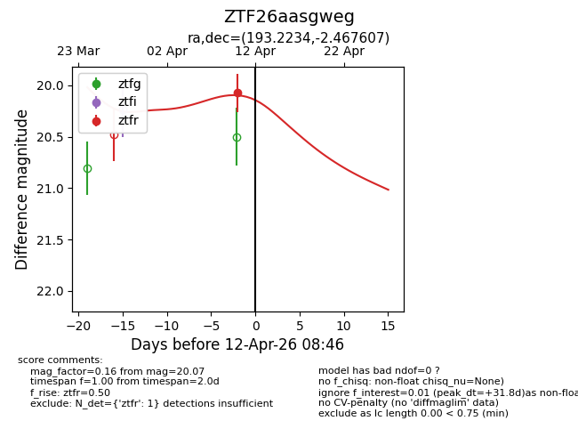
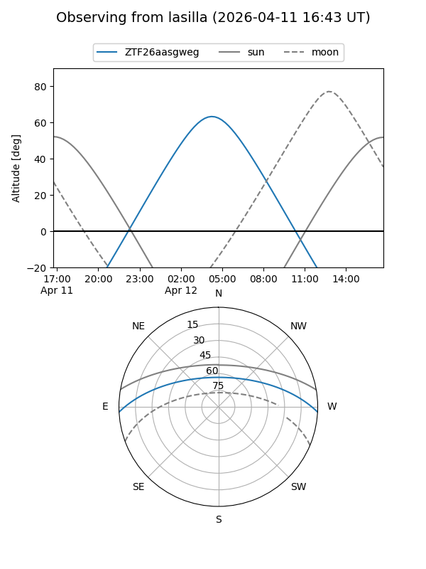
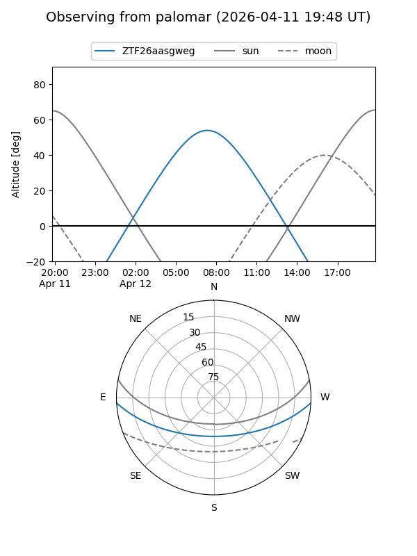
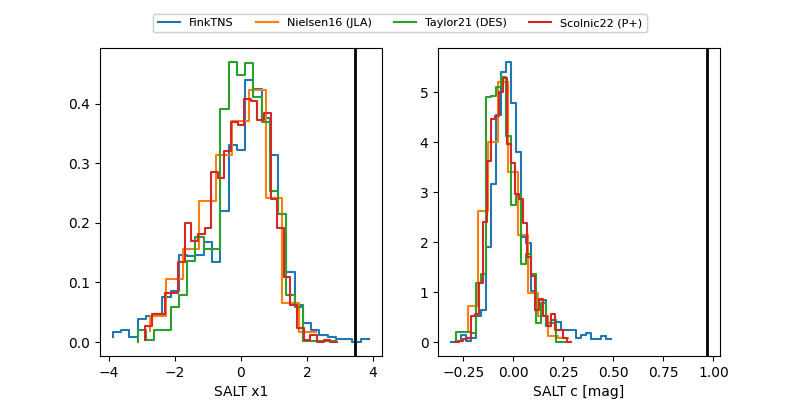

ZTF26aasgweg
Target ZTF26aasgweg at 2026-04-12 08:57
Aliases and brokers:
FINK: link
Lasair: link
ALeRCE: link
alt names
ZTF26aasgweg (ztf,fink_ztf)
Coordinates:
equatorial (ra, dec) = 193.2234,-2.46761
equatorial (HMS+DMS) = 12:52:53.61,-02:28:03.39
galactic (l, b) = (303.6680,+60.40206)
Flags:
Photometry:
last ztfr=20.07
1 ztfr detections
Lightcurve

Visibility


Additional plots
